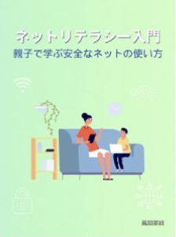
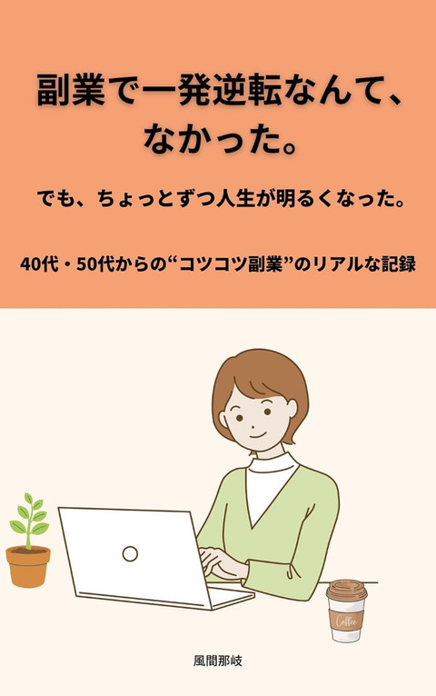

Amazonで、2冊の本を出しています。
ネットを安心して使うための本と、40代・50代からの副業の記録です。どちらも、Kindle Unlimitedの会員なら、追加料金なしで読めます。

Kindle版(電子書籍)
ネットリテラシー入門
親子で学ぶ安全なネットの使い方
子どもをネットの危険から守れていますか？
SNS・スマホ・ゲームにひそむリスクと、その回避法を親子で学べる1冊。
「今さら聞けない」ネットの基本も、やさしく解説！
- 価格
- 398円(税込)
- Kindle Unlimited
- 対象
- ページ数
- 49ページ
- 言語
- 日本語

Kindle版(電子書籍)
副業で一発逆転なんて、なかった。
でも、ちょっとずつ人生が明るくなった。
40代・50代からの“コツコツ副業”のリアルな記録
副業を始めたからといって、人生がすぐに変わるわけじゃない。
でも――ゆっくり、じっくり進めば、見える景色が変わっていく。
50代の著者が歩んできた「19年間の副業のリアル」をつづった一冊です。派遣社員として働きながら、無料ブログ・アフィリエイト・転売に挑戦し、何度も挫折しながらも、あきらめなかった記録。成功ノウハウより、続けられなかった経験や、稼げなかった現実を、正直に描いています。
「アフィリエイト報酬は10年でたった3,000円」「最初に利益が出たのは、パソコン転売1台きり」。それでも、やめなかった理由とは？
こんな方におすすめ
- 副業に興味はあるけど、何から始めていいか分からない方
- 続けられなかった過去があり、不安を感じている方
- 年齢を理由に、副業をあきらめかけている40代・50代の方
- 華やかな成功談ではなく、現実に寄り添った話を読みたい方
- 価格
- 499円(税込)
- Kindle Unlimited
- 対象
- ページ数
- 24ページ
- 言語
- 日本語
価格やKindle Unlimitedの対象かどうかは、変わることがあります(2026年10月時点)。くわしくは、Amazonの商品ページで確認してください。
この本で出てくる言葉は、用語集でも、やさしく説明しています。
← トップページへ戻る